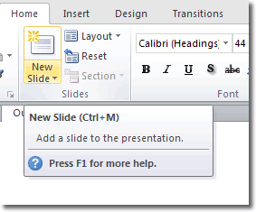

In the slide thumbnail pane on the left, click the slide that you want your new slide to follow.
On the Home tab, click New Slide.
In the New Slide dialog box, select the layout that you want for your new slide. Learn more about slide layouts.
Select Add Slide.